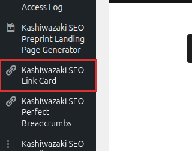

インストール・初期設定
Kashiwazaki SEO Link Card のインストールから初期設定までの手順を説明します。プラグインを有効化すると、クリック解析用のカスタムテーブル（wp_kslc_analytics）が自動作成されます。
インストール方法
方法1: WordPress管理画面からインストール
WordPress管理画面にログインし、左メニューから プラグイン > 新規追加 を選択します。

検索ボックスに「Kashiwazaki SEO Link Card」と入力し、表示されたプラグインの 今すぐインストール ボタンをクリックします。
インストール完了後、有効化 ボタンをクリックします。有効化時にクリック解析用テーブル（wp_kslc_analytics）が自動作成されます。
方法2: ZIPファイルからインストール
プラグインのZIPファイルをダウンロードします。
WordPress管理画面の プラグイン > 新規追加 > プラグインのアップロード からZIPファイルを選択し、今すぐインストール をクリックします。
インストール完了後、有効化 ボタンをクリックします。
初期設定
プラグインを有効化すると、WordPress管理画面に2つの管理ページが追加されます。
| 管理ページ | 説明 |
|---|---|
| 設定ページ | カラーテーマ、サムネイル位置、バッジ表示などのデザイン設定 |
| 解析ページ | リンクカードのクリック統計を確認 |
設定手順
WordPress管理画面の左メニューから設定ページを開きます。
カラーテーマを選択します。サイトのデザインに合わせたテーマを選択してください。
サムネイル位置を設定します。リンクカード内のサムネイル画像の表示位置（左・右）を選択できます。
バッジ設定を調整します。外部リンク・内部リンクのバッジ表示の有無を設定できます。
変更を保存 ボタンをクリックして設定を保存します。
ヒント
プラグインは有効化した時点でデフォルト設定で動作します。特別な設定変更がなくても、すぐにリンクカードの表示を開始できます。
外部通信について
メモ
本プラグインはOGP情報の取得のために wp_remote_get を使用して外部URLへHTTPリクエストを送信します。サーバーの外部通信（アウトバウンドHTTP）が許可されている必要があります。ファイアウォールやセキュリティプラグインで外部通信がブロックされている場合、OGP情報の取得に失敗する可能性があります。
動作要件の確認
| 項目 | 要件 |
|---|---|
| WordPress | 5.0 以上 |
| PHP | 5.6 以上 |
| 外部依存 | wp_remote_get による外部HTTP通信（OGPスクレイピング） |